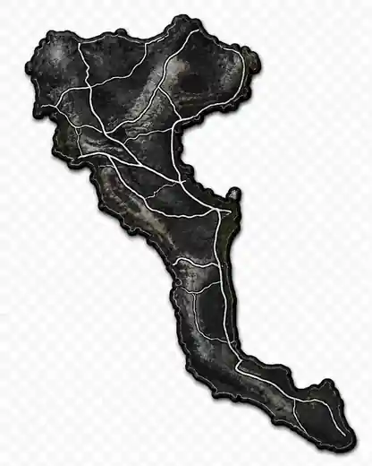

4.4 / 5
Public travel-platform summary. Clean rating only, no negative comments shown.
Ipsos · Corfu · Greece
A clean landing page for travellers who need a calm base for camper vans, caravans and tents near Da Marco. Please call before arrival.
Corfu · Ipsos
Corfu is known for green Ionian nature, olive groves and coastal villages. Ipsos grew around a long beach with clear, calm water, backed by hills and evening light.

Public travel-platform summary. Clean rating only, no negative comments shown.
Open Maps for the latest route, public rating and location details.
Use public profiles for latest review details. This site keeps the trust block minimal.
Stay options
Choose a category and contact directly before arrival.
Essential info
Short, practical information for travellers.
Main contact for availability and current details.
Use Google Maps and search for Da Marco Ipsos Corfu.
Prices, services and availability may vary by season.
Why choose it
No fake reviews. Just clear reasons why this place can work for a simple stop in Ipsos.
Near Ipsos Beach, Da Marco and local facilities.
Call or WhatsApp directly and confirm what you need.
The site keeps information honest and easy to check.
Call before arrival or send a WhatsApp message. For route planning, open Google Maps.